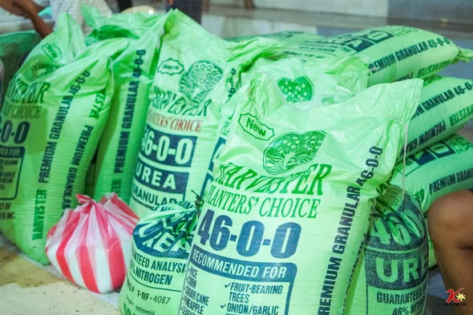
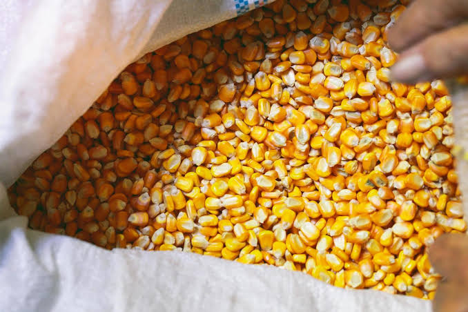
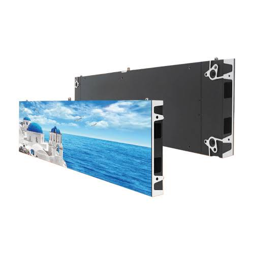
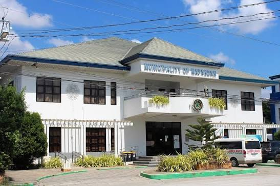

Capital Project
Procurement of Emergency Rescue Vehicles
Supply and delivery of two (2) units of emergency rescue vehicles to strengthen disaster response and emergency medical services.
Income, expenditure, appropriations, and infrastructure spending for Mapandan, gathered from official disclosures, Sangguniang Bayan resolutions, and Commission on Audit reports.
Municipality of Mapandan — 277 contracts totaling ₱470,203,285. Data from PhilGEPS via BetterGov.ph Open Data Portal.
38
Opisyal Kategorya₱470,203,285
Opisyal Pinagmulan: PhilGEPS₱1,697,485
Napatunayan Bawat kontrata277
Napatunayan Naipisan sa pamamagitan ng: BetterGov.phHalaga ng kontrata ayon sa oras • Jun 2011 – Dec 2025
Ayon sa kabuuang halaga ng kontrata • Jun 2011 – Dec 2025
Total spend by business category
Total: ₱470,203,285 • Jun 2011 – Dec 2025
| Reference No. | Contract No. | Pamagat | Kontratista / Tagapagpatupad | Organisasyon | Halaga ng Kontrata | Kategorya | Petsa ng Pagpapahayag | Katayuan |
|---|
Source: PhilGEPS | Aggregated via: BetterGov.ph | License: CC0 1.0 Universal
₱218.2M
Opisyal Source: SP Res. No. 438-2026 / Approved Mar 30, 2026₱197.7M
Napatunayan Source: Bureau of Local Government Finance₱191.8M
Napatunayan Source: Bureau of Local Government FinanceCY 2025 and CY 2026 budget figures from SP-approved General Appropriations Ordinances.
₱193,088,074
Opisyal Source: SB Res. No. 299, S-2024 — Approved Jan 6, 2025Declared operative in its entirety. Funds executive operations, local health services, public works, and statutory 20% development funds.
₱218,209,788
Opisyal Source: SP Res. No. 438-2026 — Approved Mar 30, 2026Supersedes the CY 2025 budget. Funds executive operations, local health services, public works, and statutory 20% development funds for CY 2026.
₱5,142,197.86
Official Source: SP Res. No. 871-2026 — Jul 13, 2026Covers supplemental administrative requirements, disaster risk interventions, and personnel benefits.
Mapandan utilizes credit financing through state banks for capital expansion projects, leveraging future budget cycles to fund infrastructure modernization.
| Facility | Amount | Purpose | Legislative Basis | Status |
|---|---|---|---|---|
| Fund Utilization (Amending Ord. No. 8, CY 2018) | ₱28,500,000 | Public market extension, motorpool construction, and perimeter wall | Ord. No. 1, S-2020 / SP Res. 1121-2020 | Approved |
| Land Bank of the Philippines Term Loan | ₱28,800,000 | Procurement of 16 emergency rescue vehicles (one per barangay + central unit) | Ord. No. 7, S-2024 / SP Res. 1140-2024 | Approved |
| Land Bank of the Philippines Credit Facility | ₱45,000,000 | Infrastructure expansion, public works, and LGU facility upgrades | Ord. No. 3, S-2026 | Proposed |
See also: Legislative Documents for full ordinance details and provincial review outcomes.
How Mapandan generated its ₱197.70 million in Annual Regular Income (ARI) for CY 2025, based on official BLGF data.
| Revenue Source | Amount (PHP Millions) | % of Total ARI |
|---|---|---|
| National Tax Allotment (NTA) | ₱171.76 | 86.88% |
| Locally Sourced Revenue (LSR) | ₱25.27 | 12.78% |
| — Tax Revenue (Real Property, Business, Other) | ₱8.77 | 4.44% |
| — Non-Tax Revenue (Regulatory Fees, Service Charges, Economic Enterprises) | ₱16.50 | 8.35% |
| Other Shares from National Tax Collection (e.g., EVAT Share) | ₱0.65 | 0.33% |
| Interest Income | ₱0.02 | 0.01% |
| Total Annual Regular Income (ARI) | ₱197.70 | 100.00% |
Annual revenue and expenditure totals from BLGF data. Mapandan shifted from fiscal deficits (CY 2020–2022) to surpluses beginning CY 2023, reflecting improved revenue collection and expenditure management.
| Fiscal Year | Total Revenue | Total Expenditure | Fiscal Balance |
|---|---|---|---|
| CY 2020 | ₱125,925,654 | ₱127,604,422 | −₱1,678,768 |
| CY 2021 | ₱141,635,154 | ₱146,295,946 | −₱4,660,792 |
| CY 2022 | ₱177,228,975 | ₱233,999,820 | −₱56,770,845 |
| CY 2023 | ₱155,277,148 | ₱145,373,561 | +₱9,903,587 |
| CY 2024 | ₱168,119,706 | ₱166,055,071 | +₱2,064,635 |
| CY 2025 | ₱197,702,148 | ₱191,785,854 | +₱5,916,294 |
Source: Bureau of Local Government Finance (BLGF) — LGU Fiscal Data. The CY 2022 deficit (−₱56.8M) was driven by a surge in non-operating expenditures (₱108.5M) related to capital outlays and debt service.
Mapandan's enacted budget grew 78.27% from CY 2020 to CY 2026, driven by the Mandanas-Garcia ruling expanding the National Tax Allocation base and post-pandemic recovery initiatives.
| Fiscal Year | Total Enacted Budget | Local Appropriation Ordinance | Provincial Review Status | Date of Provincial Approval |
|---|---|---|---|---|
| CY 2020 | ₱122,402,454 | Ordinance No. 02, S-2019 | Declared Operative (Res. No. 134-2020) | February 3, 2020 |
| CY 2021 | ₱129,281,542 | Local Appropriation Ordinance | Declared Operative in its Entirety | December 14, 2020 |
| CY 2022 | ₱173,142,760 | Local Appropriation Ordinance | Declared Operative (Res. No. 854-2022) | February 21, 2022 |
| CY 2023 | ₱151,540,728 | Ordinance No. 06, S-2022 | Declared Operative (Res. No. 362-2023) | May 8, 2023 |
| CY 2024 | ₱160,828,663 | Local Appropriation Ordinance | Declared Operative (Res. No. 212-2024) | February 12, 2024 |
| CY 2025 | ₱193,088,074 | Ordinance No. 04, S-2024 | Declared Operative (Res. No. 45-2025) | January 6, 2025 |
| CY 2026 | ₱218,209,788 | SP Res. No. 438-2026 | Declared Operative | March 30, 2026 |
The CY 2022 spike (₱173.14M) coincided with full devolution mandates under Executive Order No. 138 and post-pandemic recovery. The CY 2023 baseline adjustment (₱151.54M) reflected a correction in national tax collection bases, after which the budget resumed an upward trajectory.
| Fiscal Year | Total Enacted Budget (PHP Millions) |
|---|---|
| CY 2020 | 122.40 |
| CY 2021 | 129.28 |
| CY 2022 | 173.14 |
| CY 2023 | 151.54 |
| CY 2024 | 160.83 |
| CY 2025 | 193.09 |
| CY 2026 | 218.21 |
Mapandan's fiscal architecture is shaped by national tax transfers and legally mandated fund allocations.
82–87%
Of total operating revenue comes from the National Tax Allocation (formerly IRA). Locally generated taxes cover only a small fraction of municipal operations.
Napatunayan Source: BLGF / COA AAR20%
Of annual NTA share is earmarked for social development, economic development, and environmental management projects under Section 287 of R.A. 7160. Restricted to capital works; cannot fund personal services.
Statutory5%
Of estimated regular annual revenues allocated for disaster preparedness under R.A. 10121. Split: 30% Quick Response Fund (emergency relief) + 70% pre-disaster preparedness and mitigation.
StatutoryFinanced through a 1% tax levy on assessed real property values under Section 235 of R.A. 7160. Co-administered by the Municipal School Board. Restricted to supplementary funding for public schools: facility construction, educational materials, instructional support, and sports development.
StatutorySection 325(a) of R.A. 7160 limits total personnel spending to 45% or 55% of total annual regular income depending on LGU classification. Mapandan has reduced PS from 51% of operating income (CY 2013) to under 42% (CY 2015), ensuring compliance.
StatutoryThe municipality holds a net asset position, providing leverage for local infrastructure investment. Click to view the source.
₱555.4M
Verified Source: COA AAR 2024₱110.7M
Verified Source: COA AAR 2024₱444.7M
Verified Source: COA AAR 2024Longitudinal financial data showing Mapandan's fiscal trajectory during the baseline period, prior to recent budgetary expansion.
| Component | CY 2013 | CY 2014 | CY 2015 |
|---|---|---|---|
| Kita mula sa Bwis | ₱4,372,789 | ₱4,554,372 | ₱5,029,207 |
| Kabuuang Kita sa Operasyon | ₱64,849,668 | ₱71,432,036 | ₱81,052,292 |
| Personal Services (PS) | ₱33,119,810 | ₱32,661,346 | ₱33,961,796 |
| Pagpapanatili at Iba pang Operasyon (MOOE) | ₱17,914,330 | ₱20,500,817 | ₱24,590,416 |
| Kabuuang Gastos sa Operasyon | ₱54,145,928 | ₱56,386,883 | ₱61,801,161 |
| Kita mula sa Operasyon | ₱10,703,740 | ₱15,045,152 | ₱19,251,131 |
| Kabuuang Asset | ₱101,056,441 | ₱115,037,161 | ₱130,533,027 |
| Kabuuang Equity | ₱73,213,235 | ₱81,579,963 | ₱91,568,914 |
Source: COA Annual Audit Reports / Municipal Financial Statements. Tax revenue as a share of total operating income declined from 6.74% (2013) to 6.20% (2015), underscoring structural reliance on national transfers.
Mapandan's financial governance is subject to continuous oversight from the Commission on Audit, DILG, and provincial review authorities.
Unmodified
Fair presentation of financial statements in all material respects. The highest audit opinion granted by the Commission on Audit.
Official Source: COA Annual Audit ReportsGFH Certified
Passed DILG Good Financial Housekeeping evaluation in CY 2022 and CY 2024, meeting both COA audit opinion and Full Disclosure Policy compliance thresholds.
Official Source: DILG / Provincial Government of Pangasinan100%
Compliance rate in mandatory quarterly and annual financial document postings on the FDPP and physical posting locations across all evaluated reporting cycles.
Official Source: DILG MC No. 2010-83 / MC No. 2019-149Independent annual audits covering municipal accounts and local public utilities.
Published June 28, 2023. Evaluates the allocation and disbursement of the 20% Development Fund.
Read the report →Published April 13, 2023. Independent audit of the local water utility.
Read the report →Inaugurated March 15, 2024, with DOH-CHD-1 Ilocos Region. Serves all 15 barangays with outpatient, maternal care, and diagnostic services.
Additional floodlighting across the Mapandan Town Plaza to improve public safety and support community events.
Structural repairs and roof repainting for the main Municipal Hall building.
Digital LED board at the municipal complex for community advisories and emergency notices.
Structural adjustments and vendor screening to expand the Mapandan Public Market.
Acquisition of 16 manual-transmission rescue vehicles to improve disaster response and patient transport.
Direct procurement and distribution of production support — crop fertilizers and hybrid yellow corn seeds — to help local farmers with input costs.
Held every second week of April, celebrating the town's agricultural harvest and local crafts. Barangay Luyan is part of the DOT "May-kan" educational culinary tour supporting local agri-tourism.
Notable infrastructure and equipment acquisitions from municipal procurement records. Figures are based on PhilGEPS postings and COA-reported disbursements.
Supply and delivery of two (2) units of emergency rescue vehicles to strengthen disaster response and emergency medical services.

Distribution of organic fertilizer to support local farmers and promote sustainable agriculture productivity.

Supply of high-yield hybrid yellow corn seeds for the municipality's agricultural enhancement program.

Installation of a digital LED board at the municipal complex to provide timely public information and advisories.
Rehabilitation and beautification of the town plaza for community recreation, culture, and tourism.

Repair and restoration of the roof of the historic municipal hall to preserve structural integrity and heritage value.
National and provincial platforms for public access to government procurement, financial data, and freedom of information.
Government procurement postings, supplier registration, and bid opportunities for all LGUs.
philgeps.gov.ph →Public access to government information under Executive Order No. 2, s. 2016.
foi.gov.ph →Local treasury operations, revenue data, and fiscal compliance guidelines for LGUs.
blgf.gov.ph →